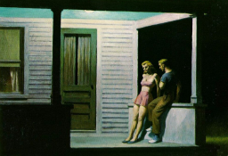
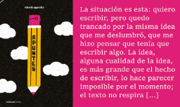
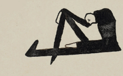
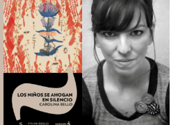
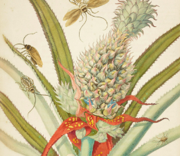

Novedades
Poesía
Seis poemas de la estadounidense Nicole Sealey (1979) inéditos en castellano y en traducción de Mariel Kozynski. La antología que resulta es «una maravillosa combinación de ciencia, política, cultura pop, mitología y emociones [...] la autora habla de lo que nos sacude, sus poemas me extienden la mano para salir a recorrer y verme a mí y ver a otras personas».
Pensamiento
El consentimiento sexual es uno de los temas más actuales y urgentes en el debate público en general y, especialmente, en el marco de la justicia penal, el derecho y los estudios de género. Por esta razón, la llegada del ensayo El sentido de consentir, de la española Clara Serra, es un acontecimiento literario destacable.
Narrativa
Compartimos las primeras páginas de Apuntes, de Roberto Appratto (1950), novedad de Criatura Editora. No hay intención moralizante en estas páginas, sino una ética, un llamado: «Lo que queda después de la pérdida son palabras que conozco muy bien, pero no me dicen nada, explosiones circunstanciales que tratan de volver a un centro, al del escritor que quiere seguir a pesar de todo».
Ensayo
Portada de «Los niños se ahogan en silencio», de Carolina Bello (Fin de Siglo, 2024). Foto de la autora: Eliana Cleffi. El nuevo libro de cuentos de Carolina Bello condensa una «búsqueda de lo esencial, del hecho desnudo, propósito que se logra por medio de un estilo más crudo y corrosivo». Giuseppe Gatti se acerca a Los niños se ahogan en silencio (Fin de Siglo, 2024) con admiración y lee los cuentos en sus relaciones mutuas, pero también en vínculos con otros libros de Bello.
Género Testimonial
«Mucho de lo que pasamos por alto es esa vida pequeña que no tiene huesos, pero que sostiene al planeta», dice el biólogo mexicano Andrés Cota Hiriart sobre los insectos. Hoy, Día Mundial del Medio Ambiente, conversamos en torno a esas y todas las vidas que se reinventan al margen de nuestra existencia. Así lo explica con una exquisita prosa este autor en Fieras familiares, un interesante libro de divulgación científica.
Gastronomía
Un nuevo mundo de sabores, de Michi Strausfeld (Siruela, 2022), se sumerge en «las exuberantes cocinas de México, Perú y Brasil». Toma de la historiografía y de la cultura popular, rasca hasta las raíces en selvas y monasterios, en herbarios y manuales de cocina, y se torna un embriagador viaje cultural por América que remata con las recetas de Sabine Hueck.